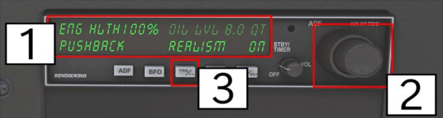

This document is not a 100% accurate depiction of real-life procedures, but instead represents a compromise of realism, fun and accessibility, based on my personal playstyle and experience.
See sections at the end of this document for more information on abbreviations and some specific aircraft systems/features.
| Category | Utility | Normal |
|---|---|---|
| Max Takeoff Weight | 2 200 lbs / 998 kg | 2 550 lbs / 1 157 kg |
| Max Landing Weight | 2 200 lbs / 998 kg | 2 550 lbs / 1 157 kg |
| VFE max. flaps ext. 0–10° | 110 KIAS | |
| VFE max. flaps ext. >10° | 85 KIAS | |
| Service Ceiling | ~14 000 ft | |
| Load Factor Limits – Flaps UP | –1.76 / +4.4g | –1.52 / +3.8g |
| Load Factor Limits – Flaps DOWN | 0 / +3.0g | 0 / +3.0g |
| Distance | Gallons | Weight (lbs) | Weight (kg) |
|---|---|---|---|
| 150 NM | 17 | 100 | 45 |
| 300 NM | 30 | 180 | 82 |
| 450 NM | 43 | 260 | 118 |
| 600 NM | 56 | 340 | 154 |
This checklist can be used for the Classic and G1000 versions, as well as the WB SIM 172 payware addon.
Items are marked respectively with G1000, Classic, or WB SIM if only applicable to one version.
See the last page for how to use the WB SIM ADF options menu.
| Speed Type | NORMAL TAKEOFF | SHORT FIELD TAKEOFF | ||
|---|---|---|---|---|
| 2 200 lbs / 998 kg | 2 400 lbs / 1 089 kg | 2 550 lbs / 1 157 kg | ||
| VLiftOff | 55 | 44 | 48 | 51 |
| V50ft | 60 | 50 | 54 | 56 |
| Speed Type | Value |
|---|---|
| VFE - max Flaps Extended 0–10° | 110 KIAS |
| VFE - max Flaps Extended >10° | 85 KIAS |
| VX Best Angle of Climb (clean) – Sea Level | 62 KIAS |
| VX Best Angle of Climb (clean) – 10 000 ft | 67 KIAS |
| VY Best Angle of Climb (clean) – Sea Level | 74 KIAS |
| VY Best Angle of Climb (clean) – 10 000 ft | 72 KIAS |
| LEANING THE MIXTURE |
|---|
| Altitude | RPM | KTAS | GPH | KGPH |
|---|---|---|---|---|
| 75% Power | ||||
| 2 000 ft | 2 550 | 118 | 10.5 | |
| 4 000 ft | 2 600 | 120 | 10.4 | |
| 6 000 ft | 2 650 | 122 | 10.4 | |
| 8 000 ft | 2 700 | 124 | 10.4 | |
| 10 000 ft | n.a. | n.a. | n.a. | n.a. |
| 12 000 ft | n.a. | n.a. | n.a. | n.a. |
| 65% Power | ||||
| 2 000 ft | 2 400 | 110 | 9.0 | |
| 4 000 ft | 2 450 | 112 | 9.0 | |
| 6 000 ft | 2 500 | 114 | 9.0 | |
| 8 000 ft | 2 550 | 115 | 9.0 | |
| 10 000 ft | 2 600 | 117 | 9.0 | |
| 12 000 ft | 2 650 | 120 | 9.0 | |
| 55% Power | ||||
| 2 000 ft | 2 250 | 100 | 7.8 | |
| 4 000 ft | 2 300 | 102 | 7.8 | |
| 6 000 ft | 2 350 | 104 | 7.8 | |
| 8 000 ft | 2 400 | 106 | 7.8 | |
| 10 000 ft | 2 450 | 108 | 7.8 | |
| 12 000 ft | 2 500 | 109 | 7.8 | |
| 45% Power | ||||
| 2 000 ft | 2 100 | 90 | 6.7 | |
| 4 000 ft | 2 150 | 92 | 6.7 | |
| 6 000 ft | 2 200 | 94 | 6.7 | |
| 8 000 ft | 2 250 | 95 | 6.7 | |
| 10 000 ft | 2 300 | 96 | 6.7 | |
| 12 000 ft | 2 350 | 97 | 6.7 | |
All data for recommended Lean Mixture (50°F / ~+10°C Rich of Peak EGT).
(Cruise Altitude – Target Altitude) / 1 000 × Faktor + 10 = required Distance in NM
| Descent Path Angle | Factor |
|---|---|
| 2° | 3.5 |
| 3° | 3.0 |
| 4° | 2.5 |
| NORMAL LANDING | SHORT FIELD LANDING | |
|---|---|---|
| VREF | 60 - 70 KIAS | 61 KIAS |
| VFE - max. Flaps Extended | 0-10° - 110 KIAS >10° - 85 KIAS |
| VX - Best Angle of Climb (clean) | S.L. = 62 KIAS 10.000 ft = 67 KIAS |
| VY - Best Rate of Climb (clean) | S.L. = 74 KIAS 10.000 ft = 72 KIAS |
| BANK ANGLE | 0° | 30° | 45° | 60° |
|---|---|---|---|---|
| Flaps UP | 48 | 52 | 57 | 68 |
| Flaps 10° | 43 | 46 | 51 | 61 |
| Flaps FULL | 40 | 43 | 48 | 57 |
Some of the WB CESSNA 172 features, like visibility of objects, failures etc. can be accessed by a menu via the screen of the ADF radio unit, when the electrical power is OFF.

1 - click in this area to change the settings or enter pushback mode
2 - use the knob to cycle through setting pages
3 - klick the button to return to ADF screen
When the electrical power is ON, clicking on the screen of the ADF brings up DME displays. You can then use the knob to switch between DME 1 and DME 2 and an options screen for an AOA indexer unit.
For more details, please refer to the WB CESSNA 172 manual.